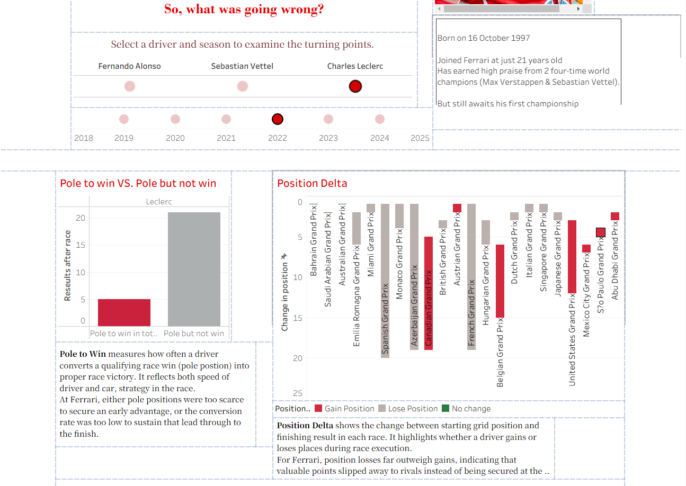
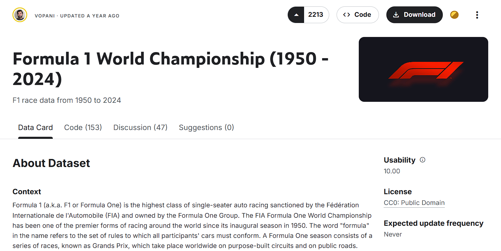
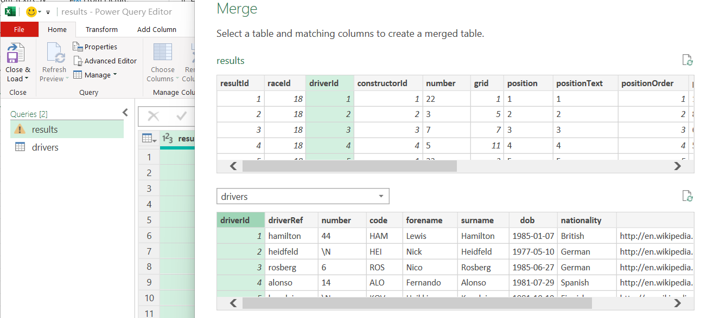
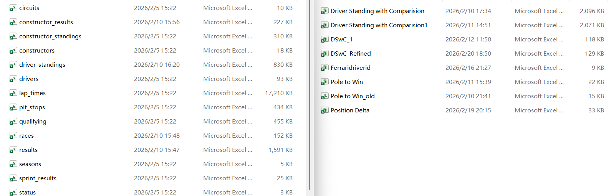
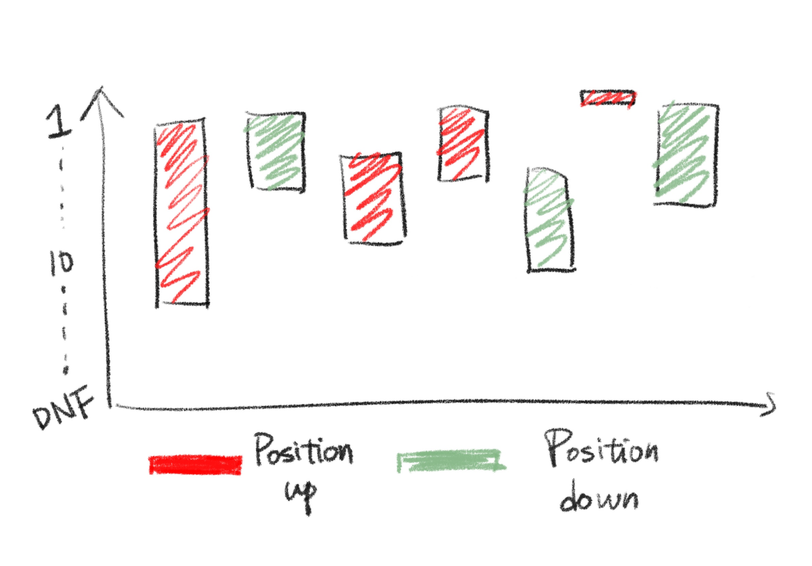
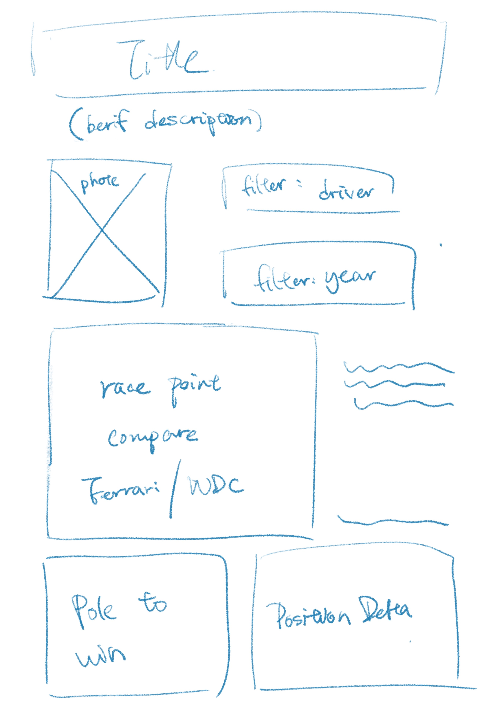
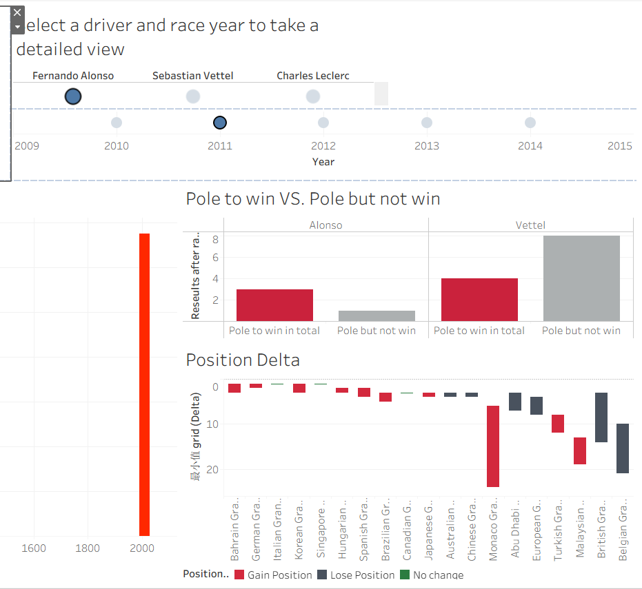
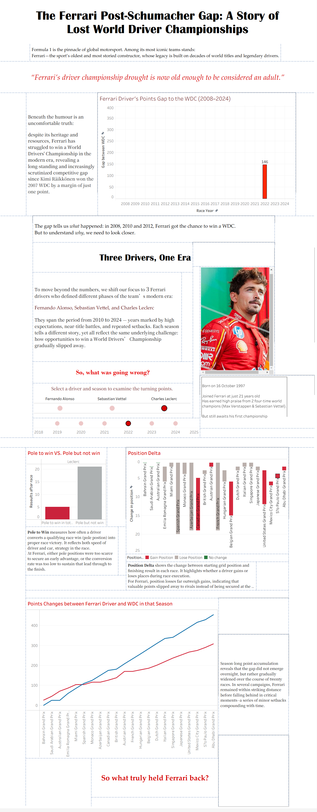

Tableau Dashboard - Data Visualization

Ferrari’s long championship drought has become a running joke among Formula 1 fans. This Tableau dashboard explores the gap between Ferrari’s competitive potential and actual race outcomes. Through interactive views of drivers, seasons, and races, users can compare qualifying strength, points accumulation, and positional change, revealing moments where apparent advantages fail to convert into championship success.
Detailed Design Process
Idea & Data
My idea started from a video displays the number of fourth-place finishes achieved by all F1 drivers in races, qualifying sessions, and practice sessions since the year 2000. I saw this as a good entry point, so I tracked down a detailed F1 data CSV file on the internet.

Data cleaning
Despite the data being highly detailed, the creator deliberately categorized different sets of information into numerous separate CSV files. I therefore prioritized identifying the data I wanted to display: change in position (from starting grid to race result), pole to win, and points comparison between selected drivers and the World Drivers' Championship. Merging data from different files into a single CSV significantly reduced the number of calculation fields I needed to set up in Tableau.

Result of Data Cleaning
Over ten CVS files were consolidated into four, including one that was manually written by myself.

Chart Visualization
This one of the Chart visulization drafts. I choosed Gnatt Chart to displaying the "Delta" change of the position.
> Red referring gainning position (Ferrari' signature color is red.)
> Green referring losing position.

Layout Design for Dashboard
During dashboard design, I discovered that a crucial feature couldn't be implemented within a single action filter. This forced me to abandon the initial horizontal layout and switch to a vertical one instead.


Final Dashaboard Design

Tableau - The Ferrari Post-Schumacher Gap: A Story of Lost World Driver Championship.